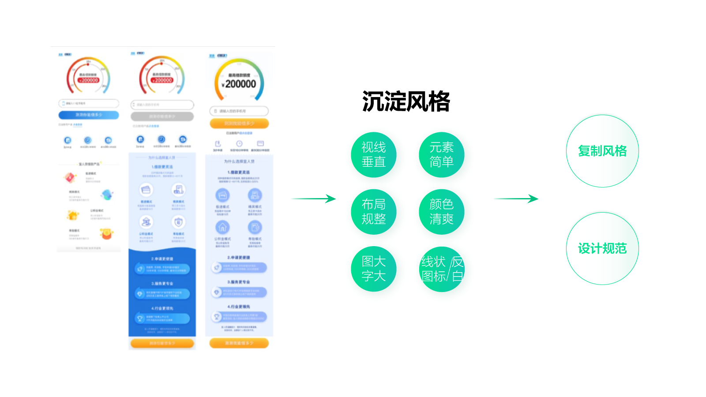

- 00 开篇词 人人都是增长官.md.html
- 01 预习 增长小白如何“弯道超车”？.md.html
- 02 预习 如何理解“增长”？.md.html
- 03 预习 不同职能如何做好增长？.md.html
- 04 预习 做增长如何处理职能间的矛盾？.md.html
- 05 正确目标找不对，天天加班也枉然.md.html
- 06 活学活用北极星指标.md.html
- 07 OKR如何助力增长？.md.html
- 08 不懂用户调研？那就对了！.md.html
- 09 调研目标：在差异性洞察中找到爆破点.md.html
- 10 数据分析：在“花式对比”中发现玄机.md.html
- 11 用户分类：围绕北极星指标细分人群.md.html
- 12 用户访谈：像侦探一样寻找破案线索（上）.md.html
- 13 用户访谈：像侦探一样寻找破案线索（下）.md.html
- 14 提炼用户差异，发现增长契机.md.html
- 15 挖掘产品优势，打破增长瓶颈.md.html
- 16 定位营销差异，抢占用户心智.md.html
- 17 一级方向：找到增长爆破点.md.html
- 18 B端产品如何调研？.md.html
- 19 全局规划增长机会.md.html
- 20 统筹全局的用户增长地图.md.html
- 21 案例解析：定义关键增长指标.md.html
- 22 正负双向洞察，找准切入点.md.html
- 23 二级机会：制定增长策略.md.html
- 24 为一家濒临破产的公司制定增长策略（上）.md.html
- 25 为一家濒临破产的公司制定增长策略（中）.md.html
- 26 为一家濒临破产的公司制定增长策略（下）.md.html
- 27 为什么指标数据怎么优化都不提升？.md.html
- 28 案例解析：打造增长闭环（上）.md.html
- 29 案例解析：打造增长闭环（下）.md.html
- 30 案例解析：唤醒沉睡用户（上）.md.html
- 31 案例解析：唤醒沉睡用户（下）.md.html
- 32 没有分解，就无缘增长.md.html
- 33 四个要点颠覆传统需求文档.md.html
- 34 三级落地：无限场景应用.md.html
- 35 手把手教你设计一次成功的实验（上）.md.html
- 36 手把手教你设计一次成功的实验（下）.md.html
- 37 积少可成多，别针换别墅.md.html
- 38 四级延续：增长组件库案例.md.html
- 39 以用户为中心增长.md.html
- 增长导航图 增长专栏的知识架构是怎样的？.md.html
- 尾声 结束意味着新的开始.md.html
- 预习答疑 你需要一张思维导图吗？.md.html
- 捐赠
37 积少可成多，别针换别墅
你好，我是刘津。
今天我们又来到了一个新的模块，第六部分：巧妙复制让增长遍地开花。在这个模块里，我们来谈一谈，如何让增长积少成多，源源不断地自行运作下去。
了解理财的人都知道，如果你每月固定存下一笔钱去做基金定投，那么坚持若干年，将产生可观的复利。
增长也是这样，如果你养成了科学实验的习惯，每次增长一点点，坚持一段时间，就会积累出巨大的成果。
比如说宜人贷的营销落地页，经过40天的实验，最终累计提升转化70%。
又比如《增长黑客实战》提到过的微软案例，微软的Bing搜索引擎曾通过A/B测试反复调试页面配色方案，最后的胜出方案与旧版色差极小，通过肉眼几乎无法识别，却提升了1000万美元的年化营收。
再比如2015年雅虎发布Yahoo Mail期间，团队花费整整10周时间进行了122次测试，通过将3%、5%、8%的优化成果不断累加，最终将下载转化率提升了13倍，成功挤入App Store免费排行榜第五名。
优化增长的复利效应由此可见一斑。
当然，增长是一个很广义的概念，既可以是价值的升级，也可以是细节的优化。总体来说，我认为增长的积少成多有三个层级，分别是：价值导向的创新迭代、成功经验的二次复制、实验结果的批量复用。
价值导向的创新迭代
还记得我在第二讲提到的微信和头条的模式吗？
微信非常注重思考和创新，围绕定位不断扩展新的功能。每一个新功能的诞生，都会引起大家的关注，带来一波又一波话题。
而微信的定位是什么呢？“一个生活方式的工具”。
围绕这个定位，微信从单人聊天拓展到群聊，在群聊的基础上又有了朋友圈，后来又有了公众号和小程序。
它的每一个功能都不是空穴来风或盲目跟随，而是来自对生活、对用户的思考，一步一个脚印地走到了今天。
而每一个功能的创新，也都为微信带来了指数级的增长。
所以，增长的迭代可以很大，也可以很小，可以是在原有的基础上不断创新，也可以是细节上的不断改良，这些都算是增长的迭代，通过长时间的积累形成巨大的增量。
而这些创新也都不是零散的点子，而是围绕定位有序地开展。表面上看好像彼此毫无关系，实际上每一次创新积累的经验和成果都为下一次创新奠定了基础。
成功经验的二次复制
与微信不同，头条非常重视技术和算法。一旦验证某个模式可以取得成功，就会不断复制该模式到其它产品上，从而取得更大的成功。
比如通过算法推荐，每个用户都能看到不同的内容，形成了真正的“千人千面”，这种模式让今日头条在众多新闻类产品中脱颖而出，成为一匹黑马。
头条尝到了这种模式的甜头，又将这种模式拓展到了当下非常火爆的短视频领域，做出了火山小视频、TOPBUZZ、抖音等产品。尤其是抖音，已经成为当下最受欢迎的短视频产品。
虽然这种模式并无太多惊喜和创意，但它能快速复制、快速占领市场，这也是一种非常聪明的增长方式。相当于取了一个配方，然后通过批量生产达到更大的经济效益。
所以微信和头条，一个像是手工自制的老字号，一个像是批量生产的工厂，两种不同的思维最终都能带来惊人的增长。因为它们都做到了积少成多，而不是把增长变成了一锤子买卖。
实验结果的批量复用
当然，对大多数人来说，这两种方式都离我们比较远。
在实际工作中，我们可能既无法做到腾讯这样的功能创新，也没有办法像头条那样从0到1做几款可复制的产品。那么现在我就介绍第三种积少成多的方法：实验结果的批量复用。
其实原理很简单，就是我们每做一次实验，都会积累相应的结论。如果实验成功，我们就会知道怎样做可以带来数据提升；如果实验失败，我们会总结经验教训，明白做什么样的事情不能带来数据提升。
那么经过一段时间的积累，我们很可能从这些实验结论中找到增长规律。
在实验结果中找到增长规律
还是拿营销落地页的实验举例，我们通过一段时间的连续实验，找出最有代表性的三个方案。其中第一个是原始方案，第二个是提升转化30%的方案，第三个是最终提升70%的方案。

通过这三个方案的演变，我们可以明显发现其中的规律：方案越来越“浓眉大眼”了。
具体体现在以下几个方面：比如视线垂直、元素简单、布局规整、颜色清爽、图大字大、图标反白等。
如果不通过实验的对比，仅仅是通过设计师“专业”的设计，我们是很难发现这样的规律的。所以，专业能力只是基础，在实际操作中还要配合合理的方法，才有可能做到增长。
复制增长规律
接下来，我们要把这些增长规律沉淀下来，形成我们新的设计规范，让团队所有人都去遵守规范，并复用到其它的场景中。
比如，我们用同样的风格修改某条业务线的H5介绍页面，转化立刻提升了20%以上。之所以要先在App里的某个H5页面上尝试，是因为H5页面可以立刻看到效果，如果效果不佳也可以立刻替换回原先的版本，降低错误的风险。
批量应用到更多场景
由于我们有多条业务线，所以后来我们索性把所有业务线的H5详情页都替换了新的风格。并且我们也同时优化了PC端的营销落地页。
结果不出所料，效果非常好，所有改进后的页面转化都有了20%以上的大幅提升。尤其是PC端营销落地页，提升了145%。而在此之前，我们团队的设计师同学优化了不下十个方案，数据均没有明显提升。
增长链
由上面这些内容我们已经可以清晰地知道，无论你用什么方式积少成多，增长都有一条内在的链路在运作，绝不是无序的、灵光乍现的、撞大运的结果。
我把这条链路叫做“增长链”，有了它，你的一点点增长成果都可能会像滚雪球一样，最终带来巨大的变化。
拿我们团队的例子来说，我们一开始锚定在H5营销落地页上，因为从用户增长地图上我们可以看到，这个页面的优化对提升北极星指标来说非常重要，对公司的价值也非常大，并且H5页面优化起来成本很低，可以立刻看到效果。
持续优化了40天以后，累计转化提升70%。在这个过程中我们做了很多次的实验，每一次实验都可以得到对应的结论。但是别忘了我之前说过的“抓大放小”，我们可以找出最重要的三个方案，观察这三个方案演变的规律，得到其中明显的增长规律。
接下来，我们把这个规律复用到App中的H5产品详情页面上，结果三条业务线的产品详情页转化都提升了20%以上。
之后，我们计划把所有App里的页面都替换成新的风格。但是很显然，这么做难度很大。因为要这样做，我们会面临一个新的问题：这么大的工作量，一个设计师肯定完不成，但是如果多个设计师一起做，风格是难以保持统一的。于是我想到了组件库的概念，这样可以用更智能的方式来替代人力，既节约了成本又提升了设计质量。关于组件库，我会在下一讲重点介绍。
这就是我们团队的增长链，稳扎稳打、步步为营，最终带来了批量的增长。
当然，每个公司的情况不一样，大家的职能也不一样，我的增长链可能并不适合你，但是你可以根据这个思路去打造合适的增长链，让增长毫不费力的遍地开花。
思考题
你能否找到属于你的增长链呢？不一定是工作方面的，个人增长方面的也可以。
欢迎把你的思考和疑问通过留言分享出来，与我和其他同学一起讨论。如果你觉得有所收获，也欢迎把文章分享给你的朋友。
© 2019 - 2023 Liangliang Lee. Powered by gin and hexo-theme-book.